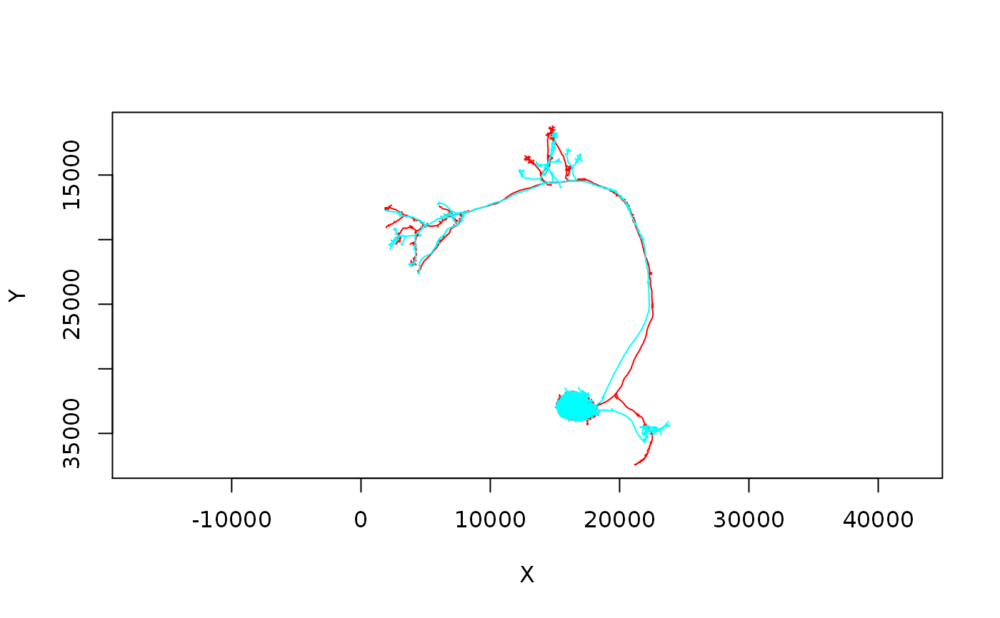

R/neurons.R
neuprint_read_neurons.Rdneuprint_read_neurons is a full service function that
tries to build as complete neuron objects as possible. Choose
whether or not to heal the fetched skeletons, assign a soma (if tagged in
neuprint) and assign synapses to approximate treenode positions, in the
style of neuron objects used by the rcatmaid package.
If neuprint_read_skeletons is used, just a simple skeleton is
retrieved.
neuprint_read_neurons( bodyids, meta = TRUE, nat = TRUE, drvid = FALSE, soma = TRUE, heal = TRUE, heal.threshold = 1000, connectors = TRUE, all_segments = TRUE, dataset = NULL, resample = FALSE, conn = NULL, OmitFailures = TRUE, ... ) neuprint_read_skeletons( bodyids, dataset = NULL, conn = NULL, heal = TRUE, heal.threshold = 1000, ... ) neuprint_read_neurons_simple(bodyids, ...)
| bodyids | the body IDs for neurons/segments (bodies) you wish to query.
This can be in any form understood by |
|---|---|
| meta | whether or not to fetch a meta data for the given bodyids, using
|
| nat | whether or not to read neurons are |
| drvid | whether or not to use |
| soma | whether or not to fetch a possible soma location for the given
bodyids, using |
| heal | whether or not to heal a fragmented skeleton using a minimum
spanning tree, via |
| heal.threshold | distance in raw units beyond which isolated fragments
will not be merged onto the main skeleton. The default of |
| connectors | whether or not to add synapse data to the retrieved
skeletons in the format used by the |
| all_segments | if TRUE, all bodies are considered, if FALSE, only 'Neurons', i.e. bodies with a status roughly traced status. |
| dataset | optional, a dataset you want to query. If |
| resample | if a number, the neuron is resampled using
|
| conn | optional, a neuprintr connection object, which also specifies the
neuPrint server. If NULL, the defaults set in your
|
| OmitFailures | Whether to omit neurons for which |
| ... | methods passed to |
a data frame in SWC format, or a
nat::neuronlist/nat::neuron object as used by
the nat and catmaid packages
# \donttest{ neurons = neuprint_read_neurons(c(818983130, 1796818119)) nat::plot3d(neurons, col = "purple", lwd = 2)#> Error: 'plot3d' is not an exported object from 'namespace:nat'## In this example, in hemibrain:v1.0, an erroneously connected bit ## of neuron skeleton is removed. n1 = neuprint_read_neurons(5812980863)#> Warning: Could not connect two vertices as edge length18730.12 is above threshold## compare with n2 = neuprint_read_neurons(5812980863, heal = FALSE) # } # \donttest{ dl1s=neuprint_read_skeletons('DL1 adPN') plot(dl1s, WithNode=F)# }